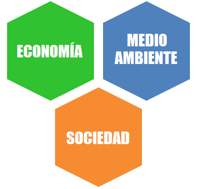
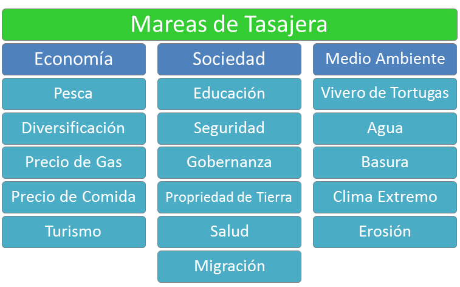

Indicadores
¿Cuales son los asuntos más importantes en Tasajera?
Temas
Economía

Los indicadores económicos son importantes para asegurar la sostenibilidad de una comunidad.
Sociedad

La dimensión social influye la salud y la felicidad de los miembros de una comunidad.
Medio Ambiente

Environmental issues have a profound impact on a community's health and development.
¿Qué es un indicador?
Mareas de Tasajera utiliza indicadores para identificar áreas específicas de interés en la comunidad. Cada indicador tiene datos o una historia video para aportar información relevante acerca de cómo una cuestión afecta a miembros de la comunidad individualmente, así como la comunidad en su conjunto. Estos indicadores se clasifican según el siguiente marco temático:
El tema general de Mareas de Tasajera es el desarrollo comunitario sostenible. Esta idea se divide entonces en tres temas: economía, sociedad y medio ambiente. Los indicadores se clasifican dentro de estas áreas de tema basadas en el tema que afectan más directamente. Es importante tener en cuenta, sin embargo, que muchos indicadores afectan varios áreas temáticos. Por ejemplo, la falta de un sistema viable de eliminación de residuos es principalmente un asunto ambiental, pero afecta a los indicadores en otras áreas temáticas como la salud y el turismo.
Estos indicadores forman una red entrelazada de información imparcial sobre Tasajera y arrojan luz sobre cómo diferentes cuestiones interactuan. Este conocimiento permite a miembros de la comunidad y otros actores en de la comunidad tomar decisiones informadas y integradas sobre el desarrollo de la comunidad. Aunque la meta del sistema es de almacenar toda la información sobre la comunidad disponible en un lugar, su objetivo también es de descentralizar el acceso al capital de información. Organizaciones son entonces más responsables para la credibilidad de su información, así como el estado de la comunidad.
Mareas de Tasajera está siempre buscando oportunidades para mejorar la capacidad del sistema de proporcionar información relevante sobre la comunidad. Si ustedes tienen sugerencias para el proyecto, por favor no duden en contactar con nosotros. Fuentes adicionales de datos son especialmente útiles.